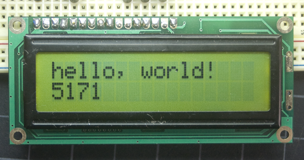
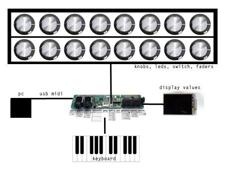

Technically possible, but with or without extra Arduino, expect to require a lot of coding.
It's possible connecting Nextion lcd on axoloti pcb?
David
#5
thank you johannes,
For the moment I would just visualize the parameters of the knobs and display the names of the parameters. For just coding parameter of the knobs is complicate ?
Passing directly with axoloti with this screen is possible? or similar?

i'm newbie 
ps: sorry for my english
Gavin
#6
Getting back to your original question about the Nextion, based on the details on the web it actualy looks like it could intergrate with the Axo quite well, but couldn't find any details about the operating voltage etc. But did show it had 8 GPIO's, can communicate over uart, even found reference to some Arduino libraries can be used on it, but no doubt plenty of work is required to get it happening.
Regarding the 16x2 lcd.. not aware of anyone who has managed to connect one to Axo directly yet, easier to connect to your arduino and find a way to syncronize the two so your chosen parameter is selected on the LCD and Axo at the same time.
axoman
#7
Just wanted to chime in and ask Johannes, please, when the time comes to develop a newer version of Axoloti Core, please consider stuff iike 16x2 LCD and 7-Segment LED displays as a bare minimum requirement for display output, in much the same way you have a dedicated amount of control inputs in the current version.
Then we could have a factory display driver object to control them. The really neat thing is that because the code of the object can be edited, other users could add support for different display types by editing it. Eventually, the "Display Driver" object could have a whole bunch of drivers built into it by other coders contributing to it over time.
So basically, a dedicated display output on the Axoloti Core combined with a factory object for driving it.
I know it can all be done now, but I mean in a cleaner, more elegant manner than having to drive another board to drive the display etc. That would be very nice, and I think very welcome for anyone wanting to incorporate a display into their standalone creations 
Blindsmyth
#8
As far as I know Johannes is pretty busy developing a neat looking control shield for the axoloti that will incorporate a display as well as encoders and buttons....
Blindsmyth
#10
http://www.axoloti.com/axoloti-control/
This is it in a very early stage. I've seen the latest version at Superbooth, looked super cool and compact, fitting exactly on top of the axoloti board. But no Info on when it's going to come out though.
johannes
#11
Indeed I'm working on a control board to connect to Axoloti Core with a small display etc. Current revision does not have much resemblance to the Axoloti Control prototype on that webpage anymore. But still a bit too early to do an official announcement.
That Nextion is very closed source...
janvantomme
#12
I made some objects to work with a specific 7-segment display shield, so that should be more or less covered.
axoman
#13
@Blindsmyth
Thanks for the link!
@johannes
Very nice, will definitely be picking one of those up when you release it!
@janvantomme
I'm generally not a fan of all-in-one boards such as that, but I'll definitely take a look into your objects as the good old 7-segment is my favourite display type. Big, bold, and can be seen from a proverbial mile!
I'm looking into these things for commercial reasons, so boards such as the one you pointed out (and the one Johannes is working on), actually have no commercial value to me whatsoever (I need to be able to position my display, LEDs, and buttons however I wish). I would buy the board Johannes is developing for use while developing, but I still need to find ways of driving simple seven-segment diplays as 'directly' as possible from the Axo. I decided I'm going to get into PICAXE, cause it lets you program in basic, then converts it all into high-performance chip-level commands. I can imagine PICAXE would be a great way to interface displays to Axoloti, acting as the driver board - and I've been wanting to get into PICAXE for some time now anyway, so now I have a good reason to do it.
thetechnobear
#14
Ive bought a 1602A , 16x2 LCD but just not got around to trying it yet. ... (looks similar to the one you show @david)
in fairness, original more for Bela, but no reason I see that you can't use it with Axoloti.
anyway for Axoloti , remember its 5v, which is ok, there are 5v supplies on Axoloti, but it will mean you will need to probably use level shifters for the data lines... (no big deal)
connection to arduino is covered in quite a few places (again, remember the level shifters to data lines etc.
(what I would do is cross reference arduino pins, to ensure I used the corresponding pins on axo)
e.g.
next the software, obviously the arduino library is not going to work 'out of the box',
so you need to get the code from here:
you'd then need to port this... but it pretty standard C++ code, and its very little code (~300 lines), nothing complex - if you take a look, you'll see basically the 'arduino functions' (pinMode, digitalWrite) are all simple to translate to axoloti equivalents... just look at the digital output code of axoloti.... do it properly, and you probably could do it by just creating a replacement for Arduino. - probably a couple of hours work
I also think this is much less work than trying to interface axoloti with an arduino just for the display code. so Id only go the arduino route, if you plan to use the arduino for other things (e.g. more gpio)
as i say, not sure if I'll connect it to axolotl, as I also have an oled , which has the advantage being 3.3v, so no level shifters required. .. saying that the 16x 2 is a nice display, (and cheap about 5 euro?)
this could be quite an interesting 'project' to show how arudino projects can be converted to Axoloti, e.g. discussing the equivalents in arduino/axoloti api and things to be 'aware' of. There are so many documented arduino projects, that being able to use them as a reference could be quite an asset for Axoloti.
perhaps if someone has converted other Arduino code, they could chime in... with tips n tricks, could be a nice 'tutorial'/ how to post 
Gavin
#15
I actually wonder how practical it would be to convert Arduino code to Axoloti.
Even the control board Johannes is working as mentioned earlier, as far as the link shows uses a separate micro controller. And many other Axoloti projects have used various dev boards in their setups. Converting code to Axoloti for tasks that can be done by other dev boards is just going to take resources away from the Axoloti doing its DSP thing. Maybe the best approach would actually be to have an Axoloti that has its microcontroller for all the DSP tasks, and another one for lots of other separate stuff like displays etc..
And on the other side of the coin, Arduino IDE can be used for many STM32 dev boards, and the list is still growing. Maybe with this in mind there is no need to convert code at all ??? 
thetechnobear
#16
the 'Axoloti control board' has another stm chip on it. and yes, its seems quite common to have additional chips to drive displays, and perhaps pots/encoders etc.
(organelle similarly has an stm chip for its display/encoders, which then communicates with the other board containing the A8)
its a good strategy if you want to have more than a few pots etc, or as you say a 'cpu' intensive display... BUT it comes at the expense of having to write a protocol between the Axoloti board and the slave board, be it over I2C/serial/spi... this is fine if your an experienced programmer, but perhaps daunting if your not.
(note: communicating with another board also is IO, so will take resources from Axoloti)
lets consider the above lcd, example, your choices are:
a) connect lcd to Axoloti, convert the Arduino code for Axoloti, then you can immediate create objects accessing it.
b) connect lcd to Arduino, then Arduino to Axoloti... you get the Arduino code for free, but you now have to write code on the Axoloti to send messages to the Arduino, then code on the Arduino to receive and decode these messages... interfacing with your chosen transport i2c/serial/spi
(a) is trivial, so if you just want to write a bit of text, its quick and easy.
however, (b) is more flexible, once the protocol is in place, you can extend it to cover, pots, midi, etc.
(b) also has one other advantage, which I've been interested in recently , it can be platform independent/modular... so your 'controller' might be built initially for use with Axoloti, but could then switch it over to use with (e.g.) Bela. (some level converters may be necessary)
I suspect this may be a simplistic view - Axoloti runs chibios and has its own firmware, so whilst many of the calls are similar they are not identical... code modifications are going to be required, but I don't think they are often going to be difficult/complex.
(lets also bare in mind, source code from the rPI may also be a candidate for 'donor code')
there really is no 'one size fits all' , depends what you want to do , what your skills are... will dictate if you need/want additional hardware, and how you interface to it.
btw: ive just noticed there is an i2c interface board for the 1602A, this has the advantage you only use 2 digitial pins ... I think I'm going to grab one
johannes
#17
Those 16x2 alphanumeric displays are most often based on a HD44780 controller. While those could be connected to axoloti GPIO, they require 7 digital gpio's to connect, and sending data requires to manipulate all these gpios sequentially in software, not quite efficient. In contrast, a display with a serial interface only requires like 4 gpios, and the STM32 microcontroller can send a packet of data without spending cpu cycles per byte, only need to spend cpu cycles to setup the transfer.
So an I2C/SPI/UART interface board between the HD44780 and Axoloti is a nicer solution, though I'm not quite sure how standardized those are.
David
#18
Hello and thank you for your answers !!
Finally I bought the screen vma412: http://www.velleman.eu/products/view/?country=be&lang=en&id=435582
My project is to create a similar synth with a small screen to display the values: http://www.synth-project.de/axcore.html
Is it possible to create this synth with only axoloti just to control? (Connect keyboard, screen, button and knobs)
example: 
Thank you !!
Ps: sorry for my english, it is bad
thetechnobear
#19
I think they are pretty standard, assuming the 16 pin input, for the same reason the Arduino software can work on a number of boards... anyway for about 2 euro, its not a big risk to test
@david
the vma12 is quite a different thing to interface to ...
first your interfacing to a display, checkout the source code here:
then you have to interface to the touch, which Is basically a HID device...
also bare in mind, that if you have 'bitmap displays' usually this implies holding a frame buffer (or perhaps 2 if you want to double buffer, which is quite likely) , for higher resolution displays this can take quite some memory...
none of this is to say its not possible, just perhaps more 'involved'
I'm a bit confused about to your reference to axcore though, this is very much a 'pot per control' synth, rather than something that need screens/menus ... this has some complexities (multiplexing the number of pots) but doesn't have the complexity of displays.
Gavin
#20
This is an interesting point your bring up, and I have already tried various configurations over serial uart, however I wonder if there is a much easier solution which Axoloti does very well that can be utilized.. MIDI.. You just need to rethink how you use the info being passed. This is method I have decided to go with, the messages follow a standard which I suspect many Axo users already know very well, everything comes into arduino as CC, and I just use conditions to define the action. I actualy wonder that quite simply an Arduino source code template could easily be made and shared.
For values onto a display pretty easy, but text might require a little more patients and forethought.
thetechnobear
#21
Midi is pretty inefficient (7bit), and if you don't use sysex, you'd use even more bandwidth.
... if your doing uart anyway, you might as well use a binary protocol, less data, quicker/easier/more flexible to parse
Gavin
#22
I guess we are only talking about diplays, you don't need high refresh rate or anything.
May only be 7 bit, but seven bit CC, seven bit value etc.. I am using 2 channels pass values back and forth which references text stored on an SD card, in fact 5 minutes before I wrote this, I finaly got the Arduino code the way I wanted for reading line by line with char's etc... I hate char's !! 
johannes
#23
...not impossible would need quite some firmware work, and would consume a significant amount of resources. Keeping a full framebuffer in Axoloti can probably be avoided, as the ILI9341 display controller has its own framebuffer and supports partial read/writes. The first job would be implementing font rendering. The Nextion thing is probably a display with a ILI9341 display controller and a microcontroller pre-programmed to convert commands into drawing.
My favorite (and my selection for axoloti-control) is a 128x64 pixel black and white LCD, that has a framebuffer layout of 8 rows of 128 bytes each, so drawing one character with a 5x7 font involves only copying 6 sequential bytes from a character table to framebuffer memory. Very efficient